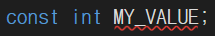
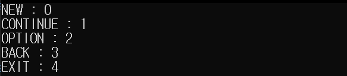
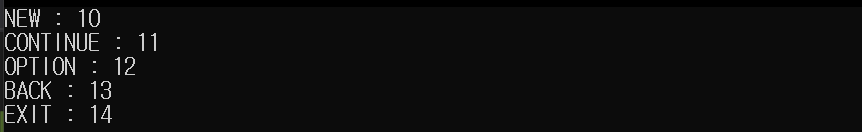

[목차]
#1 상수(Const)
#2 열거형식(enum)
* 열거형식은 변수가 아닌 새로운 형식이다.
- 개인적인 공부 내용을 기록한 글 이기에, 잘못된 내용이 있을 수 있습니다.
#1 상수(Const)
값을 변경 가능한 변수와 달리 상수는 한번 정의하면, 값을 변경하는 것이 불가능합니다. 상수의 선언 방식은 아래와 같이 const 키워드를 가장 앞에 붙이고 차례로 자료형, 상수명 그리고 값을 지정합니다.
const 자료형 상수명 = 값상수는 선언과 동시에 값을 초기화 해 주어야 하며, 초기화 하지 않을 경우 에러가 발생합니다.

#2 열거형식(enum)
같은 범주에 속하는 여러 개의 상수를 선언할 경우 enum 키워드를 사용합니다. 열거형식도 상수이긴 하지만, 따로 const 키워드를 붙여 주지는 않습니다. 열거형의 사용법은 enum 키워드를 가장 앞에 붙여주고, 열거형의 이름을 정의합니다. 다음으로 상수의 자료형이 될 기반 자료형을 콜론(:)뒤에 적습니다. 여기서, 기반 자료형은 정수 계열만 사용 가능하며 따로 명시하지 않을 경우에는 자동으로 int 형으로 설정됩니다.
enum 열거 형식명 : 기반 자로형 { 상수1, 상수2, 상수3 ... }열거 형식명.상수이름 으로 접근이 가능하며, 기본 적으로 첫 번째 열거 형식 요소에는 0, 다음 요소 부터는 1 씩 증가하며 컴파일러가 자동으로 초기화 합니다.
class Program
{
enum MyEnum { NEW, CONTINUE, OPTION, BACK, EXIT }
static void Main(string[] args)
{
Console.WriteLine("NEW : " + (int)MyEnum.NEW);
Console.WriteLine("CONTINUE : " + (int)MyEnum.CONTINUE);
Console.WriteLine("OPTION : " + (int)MyEnum.OPTION);
Console.WriteLine("BACK : " + (int)MyEnum.BACK);
Console.WriteLine("EXIT : " + (int)MyEnum.EXIT);
}
}
혹은 프로그래머가 직접 값을 지정하는 것 또한 가능합니다.
class Program
{
enum MyEnum { NEW = 10, CONTINUE, OPTION, BACK, EXIT }
static void Main(string[] args)
{
Console.WriteLine("NEW : " + (int)MyEnum.NEW);
Console.WriteLine("CONTINUE : " + (int)MyEnum.CONTINUE);
Console.WriteLine("OPTION : " + (int)MyEnum.OPTION);
Console.WriteLine("BACK : " + (int)MyEnum.BACK);
Console.WriteLine("EXIT : " + (int)MyEnum.EXIT);
}
}
* 열거형식은 변수가 아닌 새로운 형식이다.
앞의 예제에서 정의한 MyEnum 열거형식은 변수가 아닌 int, float 과 같은 새로운 형식 입니다. 따라서, MyEnum 형식을 이용해서 새로운 변수를 만들 수 있습니다.
enum MyEnum { NEW, CONTINUE, OPTION, BACK, EXIT }
static void Main(string[] args)
{
MyEnum myenum = MyEnum.NEW;
Console.WriteLine(myenum);
}MyEnum 형식 myenum 변수에는 MyEnum에 정의된 요소들만 담을 수 있습니다.